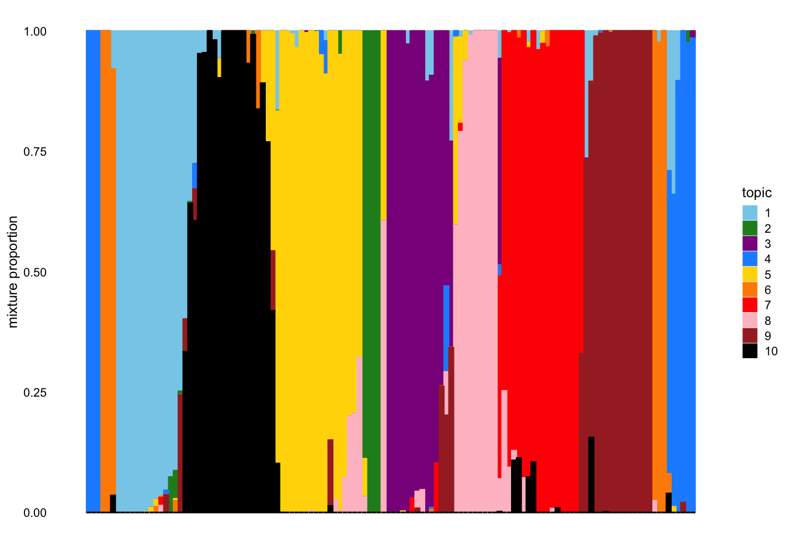
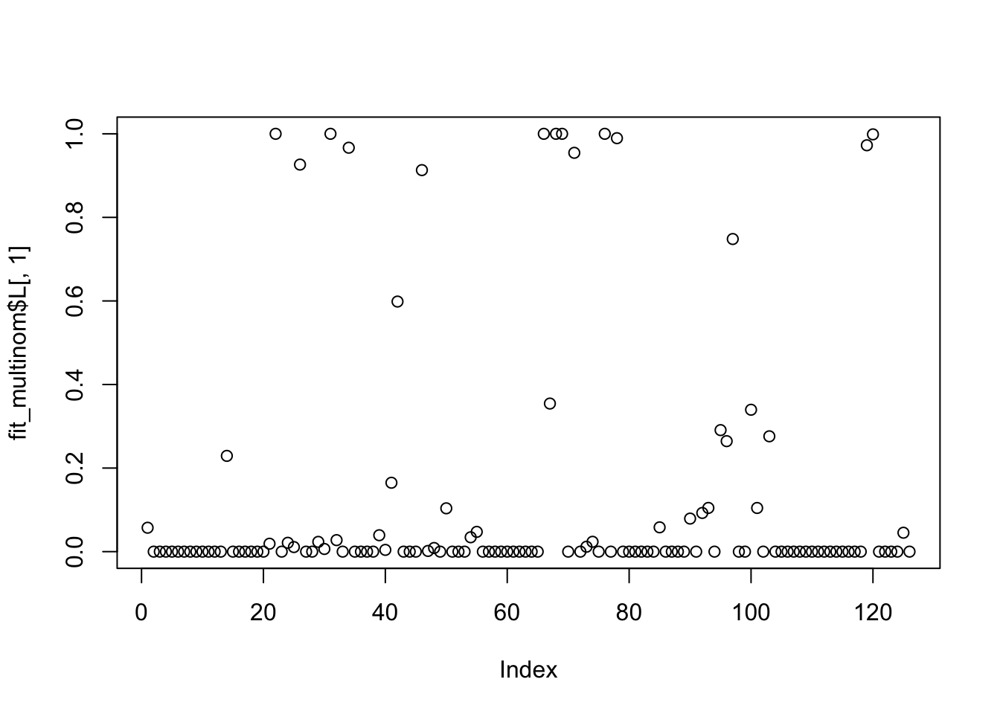
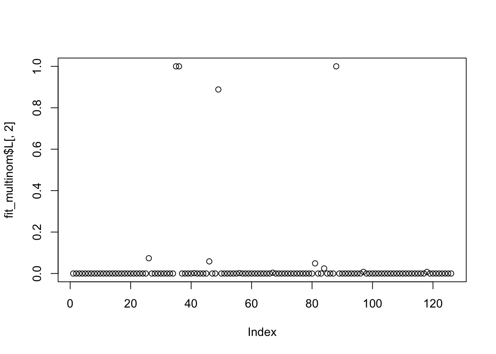
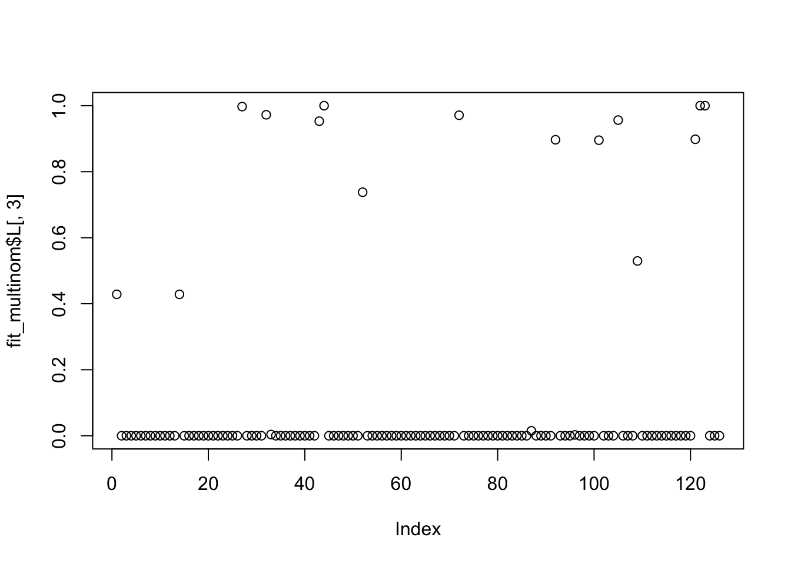
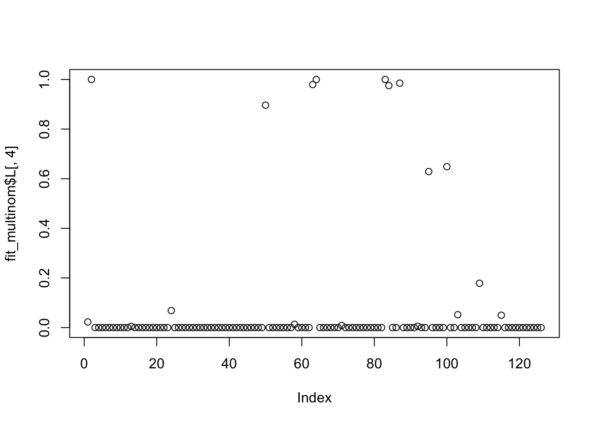
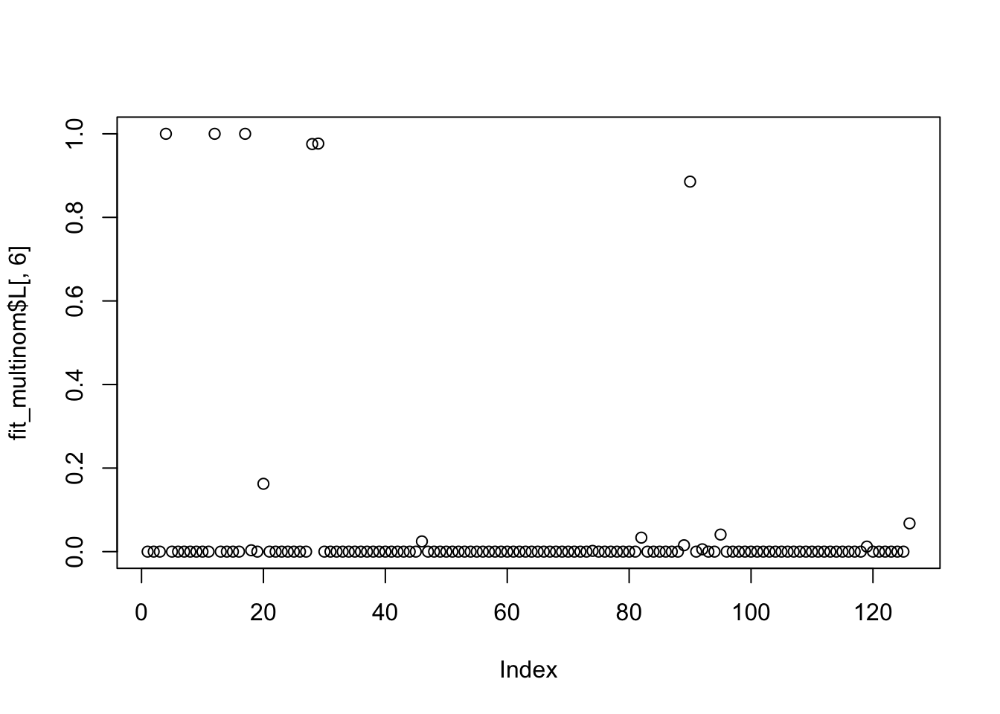
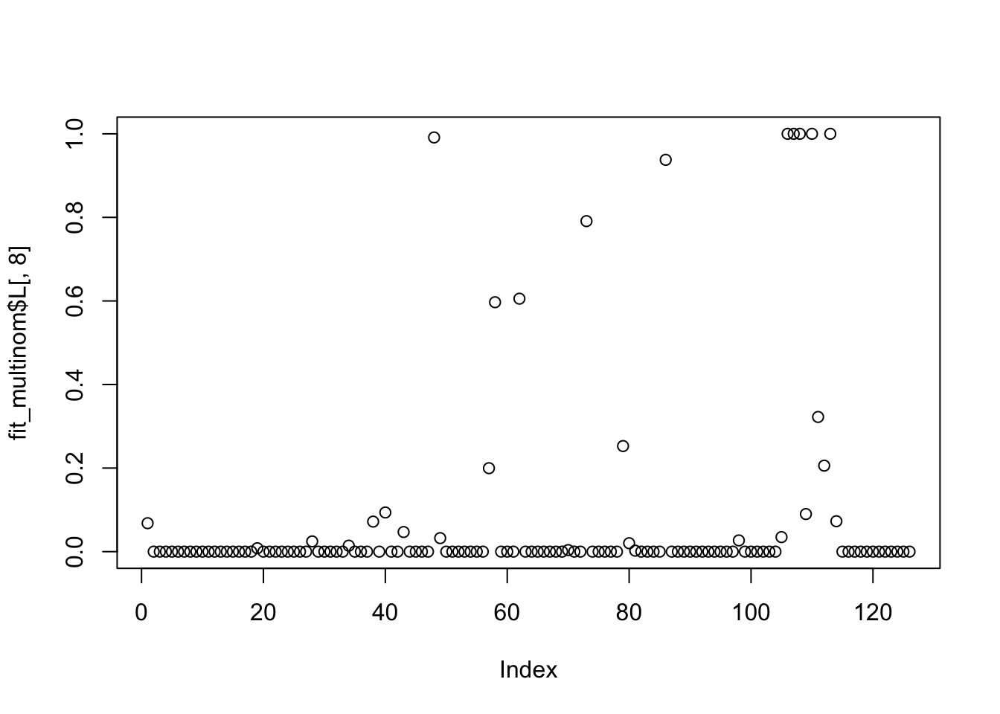
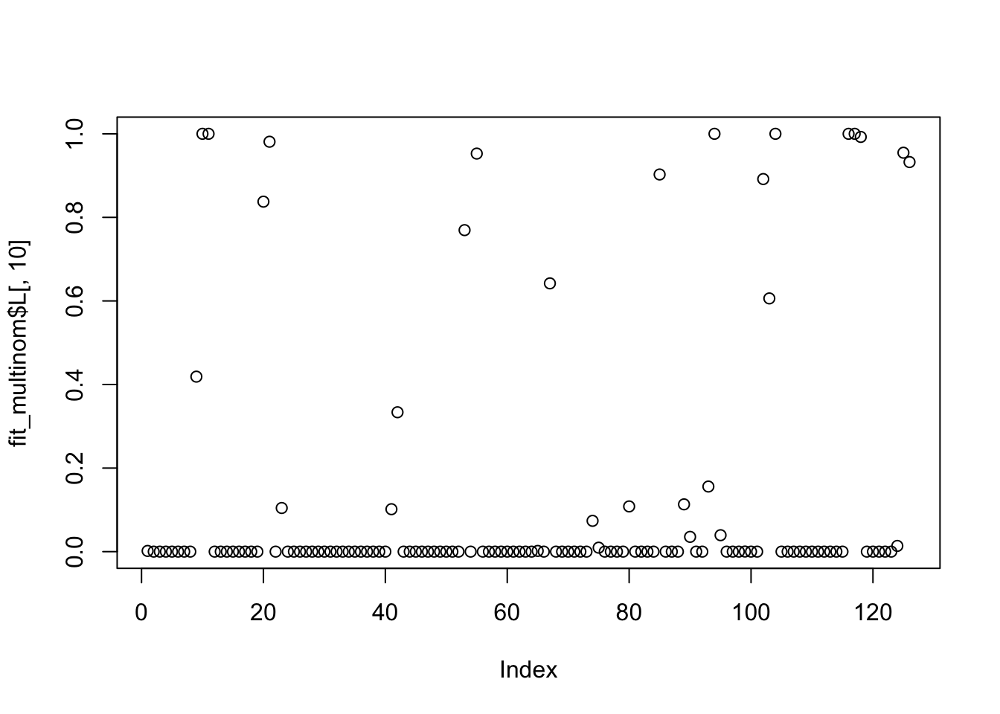

Last updated: 2022-01-14
Checks: 7 0
Knit directory: ds_text_analysis/
This reproducible R Markdown analysis was created with workflowr (version 1.7.0). The Checks tab describes the reproducibility checks that were applied when the results were created. The Past versions tab lists the development history.
Great! Since the R Markdown file has been committed to the Git repository, you know the exact version of the code that produced these results.
Great job! The global environment was empty. Objects defined in the global environment can affect the analysis in your R Markdown file in unknown ways. For reproduciblity it’s best to always run the code in an empty environment.
The command set.seed(20211214) was run prior to running the code in the R Markdown file. Setting a seed ensures that any results that rely on randomness, e.g. subsampling or permutations, are reproducible.
Great job! Recording the operating system, R version, and package versions is critical for reproducibility.
Nice! There were no cached chunks for this analysis, so you can be confident that you successfully produced the results during this run.
Great job! Using relative paths to the files within your workflowr project makes it easier to run your code on other machines.
Great! You are using Git for version control. Tracking code development and connecting the code version to the results is critical for reproducibility.
The results in this page were generated with repository version ce33cac. See the Past versions tab to see a history of the changes made to the R Markdown and HTML files.
Note that you need to be careful to ensure that all relevant files for the analysis have been committed to Git prior to generating the results (you can use wflow_publish or wflow_git_commit). workflowr only checks the R Markdown file, but you know if there are other scripts or data files that it depends on. Below is the status of the Git repository when the results were generated:
Ignored files:
Ignored: .Rhistory
Ignored: .Rproj.user/
Ignored: analysis/figure/
Ignored: data/dtm_cleaned.csv
Ignored: data/dtm_cleaned_stemmed.csv
Note that any generated files, e.g. HTML, png, CSS, etc., are not included in this status report because it is ok for generated content to have uncommitted changes.
These are the previous versions of the repository in which changes were made to the R Markdown (analysis/01_tm_fastTopics.Rmd) and HTML (docs/01_tm_fastTopics.html) files. If you’ve configured a remote Git repository (see ?wflow_git_remote), click on the hyperlinks in the table below to view the files as they were in that past version.
| File | Version | Author | Date | Message |
|---|---|---|---|---|
| Rmd | ce33cac | Matthew Stephens | 2022-01-14 | workflowr::wflow_publish(“analysis/01_tm_fastTopics.Rmd”) |
library(tm)Loading required package: NLPlibrary(fastTopics)
library(Matrix)I’m going to try to apply fastTopics to my document term matrices (dtms) created here.
dtm_cleaned = readRDS("data/dtm_cleaned.rds")
dtm_cleaned_stemmed = readRDS("data/dtm_cleaned_stemmed.rds")X = Matrix(as.matrix(dtm_cleaned_stemmed)) # creates a sparse matrix
dim(X)[1] 126 34471X <- X[,colSums(X > 0) > 0]
# Run 10 EM updates to find a good initialization.
fit0 <- fit_poisson_nmf(X,k = 10,numiter = 10)Using 8 RcppParallel threads.Initializing factors using Topic SCORE algorithm.
Initializing loadings by running 10 SCD updates.Using 8 RcppParallel threads.Fitting rank-10 Poisson NMF to 126 x 34471 sparse matrix.
Running 10 SCD updates, without extrapolation (fastTopics 0.6-74).# Fit the Poisson NMF model by running 50 EM updates.
fit_em <- fit_poisson_nmf(X,fit0 = fit0,numiter = 50,method = "em")Using 8 RcppParallel threads.Fitting rank-10 Poisson NMF to 126 x 34471 sparse matrix.
Running 50 EM updates, without extrapolation (fastTopics 0.6-74).# Fit the Poisson NMF model by running 50 extrapolated SCD updates.
fit_scd <- fit_poisson_nmf(X,fit0 = fit0,numiter = 50,method = "scd",
control = list(extrapolate = TRUE))Using 8 RcppParallel threads.Fitting rank-10 Poisson NMF to 126 x 34471 sparse matrix.
Running 50 SCD updates, with extrapolation (fastTopics 0.6-74).fit_multinom <- poisson2multinom(fit_scd)topic_colors <- c("skyblue","forestgreen","darkmagenta","dodgerblue",
"gold","darkorange","red","pink","brown","black")
structure_plot(fit_multinom,colors=topic_colors,topics = 1:10,gap = 25)Perplexity automatically changed to 40 because original setting of 100 was too large for the number of samples (126)Read the 126 x 10 data matrix successfully!
Using no_dims = 1, perplexity = 40.000000, and theta = 0.100000
Computing input similarities...
Building tree...
Done in 0.00 seconds (sparsity = 0.989922)!
Learning embedding...
Iteration 50: error is 47.951993 (50 iterations in 0.01 seconds)
Iteration 100: error is 46.929540 (50 iterations in 0.01 seconds)
Iteration 150: error is 48.620917 (50 iterations in 0.01 seconds)
Iteration 200: error is 47.747181 (50 iterations in 0.01 seconds)
Iteration 250: error is 48.786274 (50 iterations in 0.01 seconds)
Iteration 300: error is 1.240050 (50 iterations in 0.00 seconds)
Iteration 350: error is 0.979199 (50 iterations in 0.00 seconds)
Iteration 400: error is 0.976286 (50 iterations in 0.00 seconds)
Iteration 450: error is 0.976284 (50 iterations in 0.00 seconds)
Iteration 500: error is 0.976284 (50 iterations in 0.00 seconds)
Iteration 550: error is 0.976284 (50 iterations in 0.00 seconds)
Iteration 600: error is 0.976284 (50 iterations in 0.00 seconds)
Iteration 650: error is 0.976284 (50 iterations in 0.00 seconds)
Iteration 700: error is 0.976284 (50 iterations in 0.00 seconds)
Iteration 750: error is 0.976284 (50 iterations in 0.00 seconds)
Iteration 800: error is 0.976284 (50 iterations in 0.00 seconds)
Iteration 850: error is 0.976284 (50 iterations in 0.00 seconds)
Iteration 900: error is 0.976284 (50 iterations in 0.00 seconds)
Iteration 950: error is 0.976284 (50 iterations in 0.00 seconds)
Iteration 1000: error is 0.976284 (50 iterations in 0.00 seconds)
Fitting performed in 0.09 seconds.
The structure plot shows that the results are pretty “clustered” with most documents being a strong mmeber of only one topic. Here we will look at each topic – the keywords and the documents that are members of each topic.
Here we try the de analysis to identify keywords:
#in vignette the function is diff_count_analysis. which is right? maybe we should have
# get_keywords function?
dfa_out <- de_analysis(fit_multinom,X)Fitting 34471 Poisson models with k=10 using method="scd".
Computing log-fold change statistics from 34471 Poisson models with k=10.
Stabilizing posterior log-fold change estimates using adaptive shrinkage.My version of fastTopics is apparently not up to date and I am on a plane so can’t update it, so I just try to find key genes using the posterior mean of the lfc estimates.
#prints words with highest posterior mean of log fold change
# To ease interpretation I only look at "enriched" words here, not depleted words.
print_keywords = function(i){
o = order(dfa_out$postmean[,i],decreasing=TRUE)
print(colnames(X)[o[1:20]])
}A look at the topic 1 membership proportions. This topic seems to capture empirical eQTL studies, particularly involving baboon.
plot(fit_multinom$L[,1])
which(fit_multinom$L[,1]>0.9) elife-33084-v2.pdf
35
elife-57345-v2.pdf
36
Global Ecology and Biogeography - 2021 - White - Dispersal syndromes drive the formation of biogeographical regions .pdf
51 print_keywords(1) [1] "silenc" "httpsdoiorgelif" "hypoxia" "biota"
[5] "dar" "oxygen" "hkme" "realm"
[9] "ward" "sulawesi" "climat" "wallace’"
[13] "cardiomyocyt" "reoxygen" "banovich" "krabznf"
[17] "ipsccm" "bird" "biogeograph" "transpos" Topic 2 is also a set of empirical studies. The elife papers (both Ward et al) make sense to cluster together, but why they cluster with the White et al is unclear. The key words include author names (Ward, Banovich) and an elife indicator. (One would kind of prefer a “factor” for elife to get extracted on its own…)
plot(fit_multinom$L[,2])
which(fit_multinom$L[,2]>0.9) barreiro2010.pdf Blekhman2010.pdf
22 26
elife-04729-v1.pdf gb-2012-13-1-r7.pdf
34 46
Genome Res.-2012-Perry-602-10.pdf luca2013.pdf
49 66
maranville2011.pdf Maranville2012.pdf
68 69
Marioni2008.pdf pai2012.pdf
71 76
Pickrell2010.pdf Veyrieras2008.pdf
78 119
Veyrieras2012.pdf
120 print_keywords(2) [1] "eqtn" "exon" "baboon" "gcs"
[5] "lps" "probe" "nfkb" "glucocorticoid"
[9] "decay" "lemur" "monocyt" "lane"
[13] "spring" "harbor" "nonhuman" "junction"
[17] "gcon" "interact" "array" "illumina" Topic 3 is more empirical studies, several in Nature Genetics. It includes the Schor et al paper on CAGE and the Zhang et al paper on m6a, as well as the Hellmuth-Kim et al GTEX paper on interacting qtls. There are fewer documents with strong membership so i dropped the cutoff ot 0.8.
plot(fit_multinom$L[,3])
which(fit_multinom$L[,3]>0.8) 2106.13634.pdf s41588-018-0268-8.pdf s41588-020-0631-4.pdf
14 93 94
s41588-020-0644-z.pdf science.aaz8528.pdf Shim2015.pdf
95 101 103
turchin2019.pdf
118 print_keywords(3) [1] "ieqtl" "multiseq"
[3] "mash" "isqtl"
[5] "pleiotropi" "waveletbas"
[7] "coloc" "qtl"
[9] "rbps" "rbp"
[11] "qtls" "βmj"
[13] "wwwnaturecomnaturegenet" "iqtl"
[15] "reanalysi" "dsqtls"
[17] "shim" "sqtls"
[19] "tissu" "share" Topic 4 captures a diverse set of papers - workflowr(!) and msCentipede; proteomics with Li et al, the EDLogo paper (which seems to appear twice, as dey2007.pdf and s12859-018-2489-3.pdf?); and the Morrison et al MR paper. Some of these seem to be driven by workflowr use, but why the proteomics papers go here i do not know. (Maybe they would get their own topic if we used more topics….)
plot(fit_multinom$L[,4])
which(fit_multinom$L[,4]>0.9) bty779.pdf Fu2010.pdf fu2012.pdf
27 43 44
Li2010.pdf li2012.pdf Raj2015.pdf
63 64 83
Raj2016.pdf s12859-018-2489-3.pdf s41467-019-11284-9.pdf
84 87 92
Shiraishi2015.pdf
105 print_keywords(4) [1] "peptid" "spectra" "mcds" "lethal" "dnmt"
[6] "daughter" "mscentiped" "drivermap" "dnmts" "triplet"
[11] "prs" "signatur" "edlogo" "cage" "logo"
[16] "rpf" "tssqtls" "uacd" "charg" "strand" Topic 5 picks out the two large-scale GWAS enrichment studies. A nice topic!
plot(fit_multinom$L[,5])which(fit_multinom$L[,5]>0.9) barber2010.pdf carbonetto2013.pdf hart2012.pdf
21 29 55
Reiner2008.pdf s41467-018-06805-x.pdf shim2015b.pdf
85 90 104 print_keywords(5) [1] "subfract" "ldlc" "gatm" "pathway" "statin"
[6] "princ" "cetp" "mhc" "parc" "chs"
[11] "plasma" "cdh" "idl" "cap" "priorit"
[16] "drug" "rsse" "simvastatin" "apo" "session" Topic 6 picks out the elephant-related papers as well as some more pop-gen related papers. It seems again that more than one topic has been merged… probably because I used too few topics.
plot(fit_multinom$L[,6])
which(fit_multinom$L[,6]>0.9)1337008e-1f01-45e0-b363-2fb1ae2fadf8_20843_-_john_blischak.pdf
2
g3journal0457.pdf
45
genetics0789.pdf
47
Howie2012.pdf
59
Marchini2006.pdf
70
Scheet2006.pdf
98
Scheet2008.pdf
99
Stephens2003a.pdf
112
Stephens2005.pdf
114 print_keywords(6) [1] "workflowr" "khap" "hap" "git" "niu"
[6] "updog" "ldbase" "scheet" "trio" "rmd"
[11] "prephas" "fastphas" "lotyp" "gmb" "wwwajhgorg"
[16] "discrep" "beagl" "imput" "wphase" "reconstruct"Topic 7 covers papers on methods development for GWAS, including BSLMM, BVSR, varbvs, GEMMA, and mulivariate GWAS. Also quite nice topic.
plot(fit_multinom$L[,7])which(fit_multinom$L[,7]>0.9) 027.082.0408.pdf alasadi2019.pdf Basu2010.pdf Falush2003a.pdf
1 19 23 38
Falush2003b.pdf Falush2007.pdf Hubisz2009.pdf Novembre2008.pdf
39 40 60 74
Novembre2008b.pdf Petkova2016.pdf Pritchard2000a.pdf Pritchard2000b.pdf
75 77 79 80
raj2014.pdf
82 print_keywords(7) [1] "eem" "admixtur" "deme" "psc" "faststructur"
[6] "europ" "coffe" "migrat" "pca" "admix"
[11] "strat" "falush" "tdt" "plk" "novembr"
[16] "ptm" "subpopul" "fst" "isol" "structur" Topic 8 covers papers on non-GWAS methods development, particularly centered around ash and RUV.
plot(fit_multinom$L[,8])
which(fit_multinom$L[,8]>0.9) 1709.06597.pdf 2012_Zhou&Stephens_NG.pdf
4 9
2013_Zhouetal_PG.pdf 2014_Zhou&Stephens_NM.pdf
10 11
2021.11.03.467167v1.full.pdf 501114v4.full.pdf
12 17
AOAS0912-021R2A0.pdf Carbonetto2012.pdf
20 28
Stephens2009.pdf stephens2013.pdf
116 117
WenStephens2014.pdf Zhu2017.pdf
125 126 print_keywords(8) [1] "bslmm" "varbv" "css" "ibss" "●●●"
[6] "effect" "susierss" "subgroup" "susiesuff" "rpg"
[11] "gemma" "lasso" "bvsr" "dapg" "variabl"
[16] "hyperparamet" "susi" "qtn" "pve" "ser" Topic 9 covers papers on structure and EEMS. Also a nice topic.
plot(fit_multinom$L[,9])which(fit_multinom$L[,9]>0.9) Crawford2004.pdf Hellenthal2006a.pdf Hellenthal2006b.pdf
30 56 57
Hellenthal2007.pdf Li2003.pdf Mondol2015.pdf
58 62 72
msy006.pdf Roychoudhury2007.pdf step0444.pdf
73 86 106
Stephens2000a.pdf Stephens2000d.pdf Stephens2003b.pdf
107 110 113
Wasser2004.pdf Wasser2007.pdf Wasser2008.pdf
121 122 123 print_keywords(9) [1] "hot" "tusk" "ivori" "mrca" "asg"
[6] "crossov" "seizur" "kuhner" "poach" "trade"
[11] "sperm" "tavare\020" "tmrca" "genealog" "gri\u0081th"
[16] "hotspot" "wasser" "tavareâ" "tap" "griffith" Topic 10 covers papers on haplotypes and recombination. Also some imputation. Another nice topic.
plot(fit_multinom$L[,10])
which(fit_multinom$L[,10]>0.9) 1705.08393.pdf
3
1812.07488.pdf
5
19-042.pdf
6
1901.10679.pdf
7
20-589.pdf
8
2105.13440.pdf
13
2110.00152.pdf
15
368316v2.full.pdf
16
A Fast Algorithm for Maximum Likelihood Estimation of Mixture Proportions Using Sequential Quadratic Programming.pdf
18
biosts_21_1_15.pdf
25
Gottardo2006.pdf
52
kxw041.pdf
61
lu-stephens-2016.pdf
65 print_keywords(10) [1] "ebnm" "ruv" "nmf" "smash"
[5] "scrnaseq" "gom" "efron" "unimod"
[9] "ebmf" "gagnonbartsch" "imag" "nonparametr"
[13] "cashr" "limmar" "vash" "johnston"
[17] "solv" "nonneg" "topic" "runtim" The results include some nice topics. But it feels like maybe some things that are different topics have been merged, or sometimes it is just forced to put things together that don’t have very much in common. It would be good to try a larger K.
I haven’t looked much at the “admixed” papers, but a general feature of the results is that the papers are quite clustered, which is both consistent with my general experience of these models, and at the same time a bit problematic when one considers the goal of topic modelling to identify cross-cutting themes and multi-topic documents.
sessionInfo()R version 4.1.0 Patched (2021-07-20 r80657)
Platform: aarch64-apple-darwin20 (64-bit)
Running under: macOS Monterey 12.0.1
Matrix products: default
BLAS: /Library/Frameworks/R.framework/Versions/4.1-arm64/Resources/lib/libRblas.0.dylib
LAPACK: /Library/Frameworks/R.framework/Versions/4.1-arm64/Resources/lib/libRlapack.dylib
locale:
[1] en_US.UTF-8/en_US.UTF-8/en_US.UTF-8/C/en_US.UTF-8/en_US.UTF-8
attached base packages:
[1] stats graphics grDevices utils datasets methods base
other attached packages:
[1] Matrix_1.3-4 fastTopics_0.6-74 tm_0.7-8 NLP_0.2-1
[5] workflowr_1.7.0
loaded via a namespace (and not attached):
[1] Rtsne_0.15 colorspace_2.0-2 ellipsis_0.3.2
[4] class_7.3-19 rprojroot_2.0.2 fs_1.5.0
[7] rstudioapi_0.13 farver_2.1.0 listenv_0.8.0
[10] MatrixModels_0.5-0 ggrepel_0.9.1 prodlim_2019.11.13
[13] fansi_0.5.0 lubridate_1.8.0 xml2_1.3.2
[16] codetools_0.2-18 splines_4.1.0 knitr_1.36
[19] jsonlite_1.7.2 pROC_1.18.0 mcmc_0.9-7
[22] caret_6.0-90 ashr_2.2-47 compiler_4.1.0
[25] httr_1.4.2 assertthat_0.2.1 fastmap_1.1.0
[28] lazyeval_0.2.2 later_1.3.0 prettyunits_1.1.1
[31] htmltools_0.5.2 quantreg_5.86 tools_4.1.0
[34] coda_0.19-4 gtable_0.3.0 glue_1.5.0
[37] reshape2_1.4.4 dplyr_1.0.7 Rcpp_1.0.7
[40] slam_0.1-49 jquerylib_0.1.4 vctrs_0.3.8
[43] nlme_3.1-153 conquer_1.2.1 iterators_1.0.13
[46] timeDate_3043.102 gower_0.2.2 xfun_0.28
[49] stringr_1.4.0 globals_0.14.0 ps_1.6.0
[52] lifecycle_1.0.1 irlba_2.3.3 future_1.23.0
[55] getPass_0.2-2 MASS_7.3-54 scales_1.1.1
[58] ipred_0.9-12 hms_1.1.1 promises_1.2.0.1
[61] parallel_4.1.0 SparseM_1.81 yaml_2.2.1
[64] pbapply_1.5-0 ggplot2_3.3.5 rpart_4.1-15
[67] stringi_1.7.5 SQUAREM_2021.1 highr_0.9
[70] foreach_1.5.1 lava_1.6.10 truncnorm_1.0-8
[73] rlang_0.4.12 pkgconfig_2.0.3 matrixStats_0.61.0
[76] evaluate_0.14 lattice_0.20-45 invgamma_1.1
[79] purrr_0.3.4 labeling_0.4.2 recipes_0.1.17
[82] htmlwidgets_1.5.4 cowplot_1.1.1 processx_3.5.2
[85] tidyselect_1.1.1 parallelly_1.29.0 plyr_1.8.6
[88] magrittr_2.0.1 R6_2.5.1 generics_0.1.1
[91] DBI_1.1.1 pillar_1.6.4 whisker_0.4
[94] withr_2.4.2 survival_3.2-13 mixsqp_0.3-43
[97] nnet_7.3-16 tibble_3.1.6 future.apply_1.8.1
[100] crayon_1.4.2 utf8_1.2.2 plotly_4.10.0
[103] rmarkdown_2.11 progress_1.2.2 grid_4.1.0
[106] data.table_1.14.2 callr_3.7.0 git2r_0.29.0
[109] ModelMetrics_1.2.2.2 digest_0.6.28 tidyr_1.1.4
[112] httpuv_1.6.3 MCMCpack_1.6-0 RcppParallel_5.1.4
[115] stats4_4.1.0 munsell_0.5.0 viridisLite_0.4.0
[118] quadprog_1.5-8